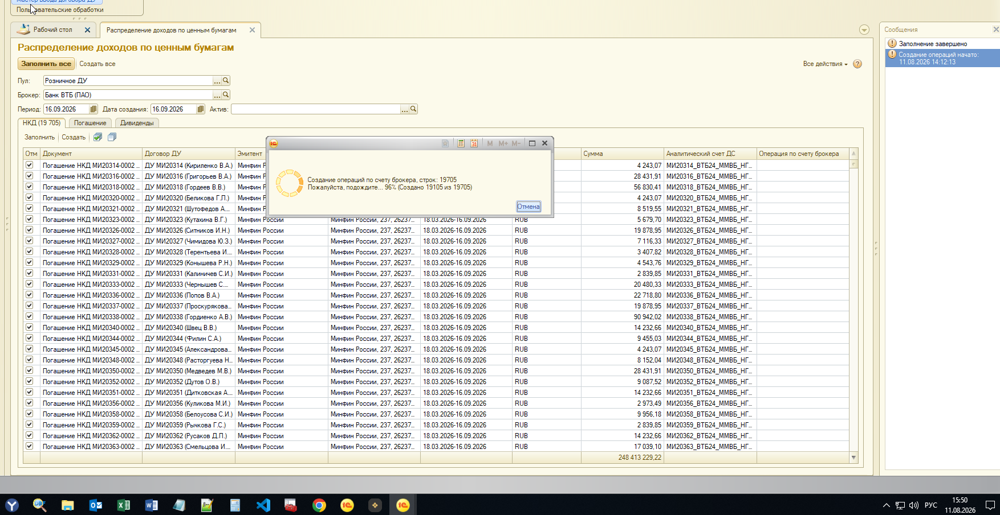
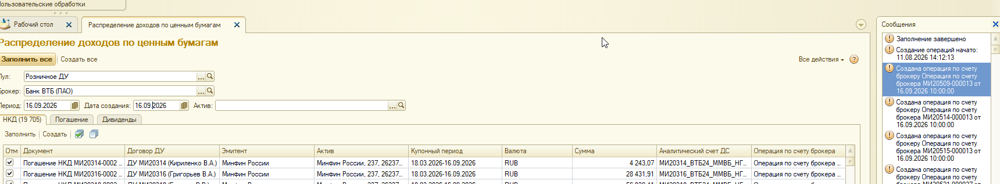
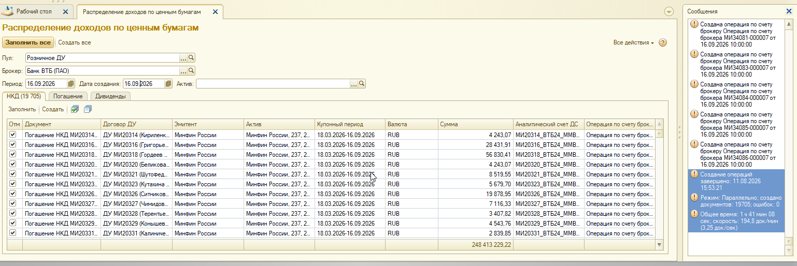

Сравнение скорости на базе Т-1
IMDEV-9302: последовательный режим vs параллельный «Создать все» (данные за 16.09.2026)
База: Т-1
Период: 16.09.2026
Пул: Розничное ДУ
Брокер: Банк ВТБ (ПАО)
Вкладка: НКД
Было (прогноз)
7 ч 45 мин
42,4 док/мин
Стало (факт)
1 ч 41 мин
194,8 док/мин
Ускорение
x4,6
по скорости и времени
Экономия
~6 ч 04 мин
на объёме ~20 тыс.
1. Введение
На базе Т-1 ранее выполнен замер старого (последовательного) алгоритма
и зафиксирован в baseline_speed_old.html.
11.08.2026 на тех же условиях (день операций 16.09.2026) прогнан новый
параллельный алгоритм. Ниже - прямое сравнение «было / стало».
Вердикт: полный прогон параллельно завершён успешно
(19 705 / 0 ошибок),
время сократилось с ~7 ч 45 мин до 1 ч 41 мин 08 сек.
2. Условия прогона (одинаковые)
| Параметр | Значение |
|---|
| База | Т-1 |
| Обработка | Распределение доходов по ценным бумагам |
| Команда | «Создать все» |
| Период / дата создания | 16.09.2026 |
| Пул | Розничное ДУ |
| Брокер | Банк ВТБ (ПАО) |
| Заполненные вкладки | только НКД (Погашение и Дивиденды пустые) |
Объём чуть отличается: в baseline было 19 688 строк НКД (прогноз),
в новом прогоне фактически создано 19 705 документов.
Разница ~17 строк на сравнение скорости не влияет.
3. Было vs Стало
Было (последовательно)
Источник: baseline_speed_old.html
~7 ч 45 мин
прогноз на полный объём
| Режим | Последовательный |
|---|
| Строк НКД | 19 688 |
|---|
| Скорость | ≈ 42,4 док/мин (0,71 док/сек) |
|---|
| Метод замера | Промежуточный: 7 712 из 19 688 за 3 ч 02 мин (старт 18:00, замер 21:02) |
|---|
| Статус | Полный прогон не дожидались; экстраполяция |
|---|
Стало (параллельно)
Источник: Тестирование на Т_1.docx
1 ч 41 мин 08 сек
факт полного прогона
| Режим | Параллельно |
|---|
| Создано | 19 705 |
|---|
| Ошибок | 0 |
|---|
| Скорость | 194,8 док/мин (3,25 док/сек) |
|---|
| Старт / финиш | 11.08.2026 14:12:13 → 15:53:21 |
|---|
| Статус | Полный прогон завершён |
|---|
Наглядное сравнение времени на ~20 тыс. документов
Длина полосы «Стало» ≈ 21,7% от «Было» (101 мин / 465 мин).
Сводная таблица
| Метрика |
Было |
Стало |
Изменение |
| Объём НКД |
19 688 |
19 705 |
+17 |
| Скорость, док/мин |
42,4 |
194,8 |
x4,6 |
| Скорость, док/сек |
0,71 |
3,25 |
x4,6 |
| Время на полный объём |
≈ 7 ч 45 мин (прогноз) |
1 ч 41 мин 08 сек (факт) |
−6 ч 04 мин |
| Ошибки |
не фиксировались в baseline |
0 |
— |
4. Расчёт ускорения
- Старое время на сопоставимый объём: 19 705 / 42,4 ≈ 465 мин (≈ 7 ч 45 мин).
- Новое фактическое время: 1 ч 41 мин 08 сек = 101,13 мин.
- Ускорение по времени: 465 / 101,13 ≈ x4,6.
- Ускорение по скорости: 194,8 / 42,4 ≈ x4,6.
- Экономия: 465 − 101 ≈ 364 минуты ≈ 6 ч 04 мин на одном дне.
На Т-1 скорость параллельного режима (3,25 док/сек) ниже, чем на предыдущем ИТ-прогоне
с 7 582 строками (10,97 док/сек). Это ожидаемо: другой объём, нагрузка СУБД и окружение базы.
Главный результат для Т-1 - сокращение полного дня с почти 8 часов до менее 2 часов.
5. Доказательства нового прогона (скриншоты)
Ход выполнения (96%)
Старт создания: 11.08.2026 14:12:13.
На скрине прогресс 96% (создано 19 105 из 19 705), вкладка НКД (19 705),
сумма по таблице 248 413 229,22.

Рис. 1. Параллельное создание на Т-1: 96% (19 105 из 19 705)
Сообщения о старте и создании операций

Рис. 2. Заполнение завершено, создание начато 14:12:13, идут сообщения о созданных операциях
Итог полного прогона
Создание операций завершено: 11.08.2026 15:53:21
Режим: Параллельно; создано документов: 19705; ошибок: 0
Общее время: 1 ч 41 мин 08 сек; скорость: 194,8 док/мин (3,25 док/сек)

Рис. 3. Финальные сообщения формы после полного прогона на Т-1
6. Выводы
1. На базе Т-1 новый алгоритм отработал полный день 16.09.2026 без ошибок.
2. Время сократилось с прогноза ~7 ч 45 мин до факта 1 ч 41 мин (примерно в 4,6 раза).
3. Скорость выросла с 42,4 до 194,8 док/мин.
4. Для эксплуатационного сценария Т-1 оптимизация IMDEV-9302 даёт экономию порядка 6 часов на одном прогоне «Создать все».